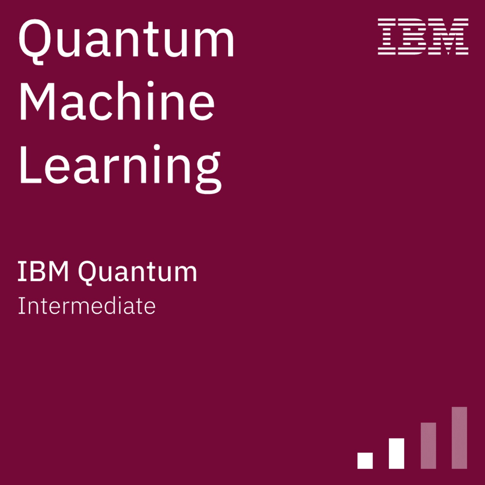
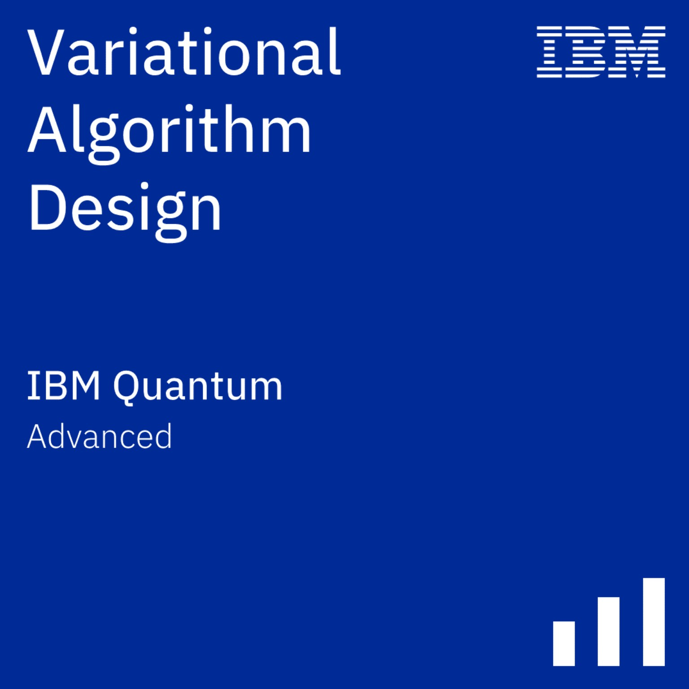
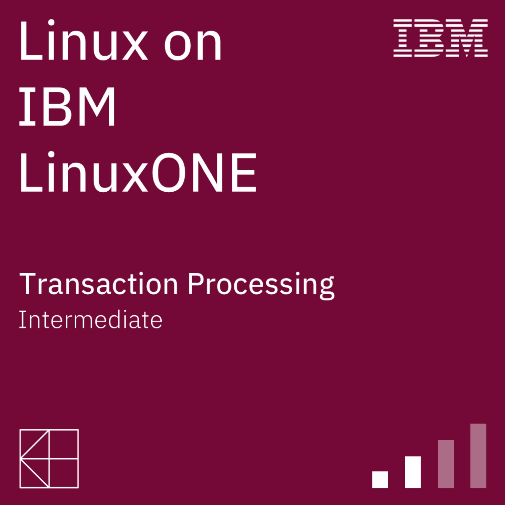
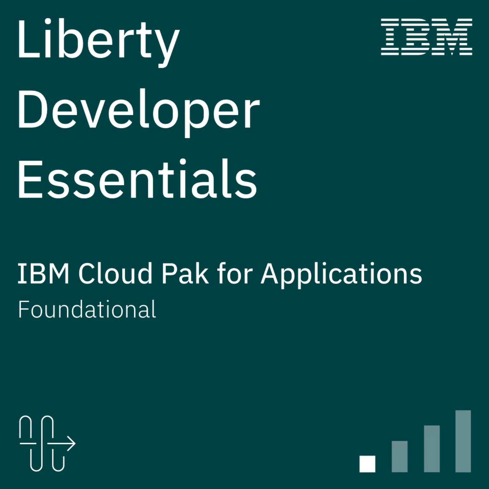
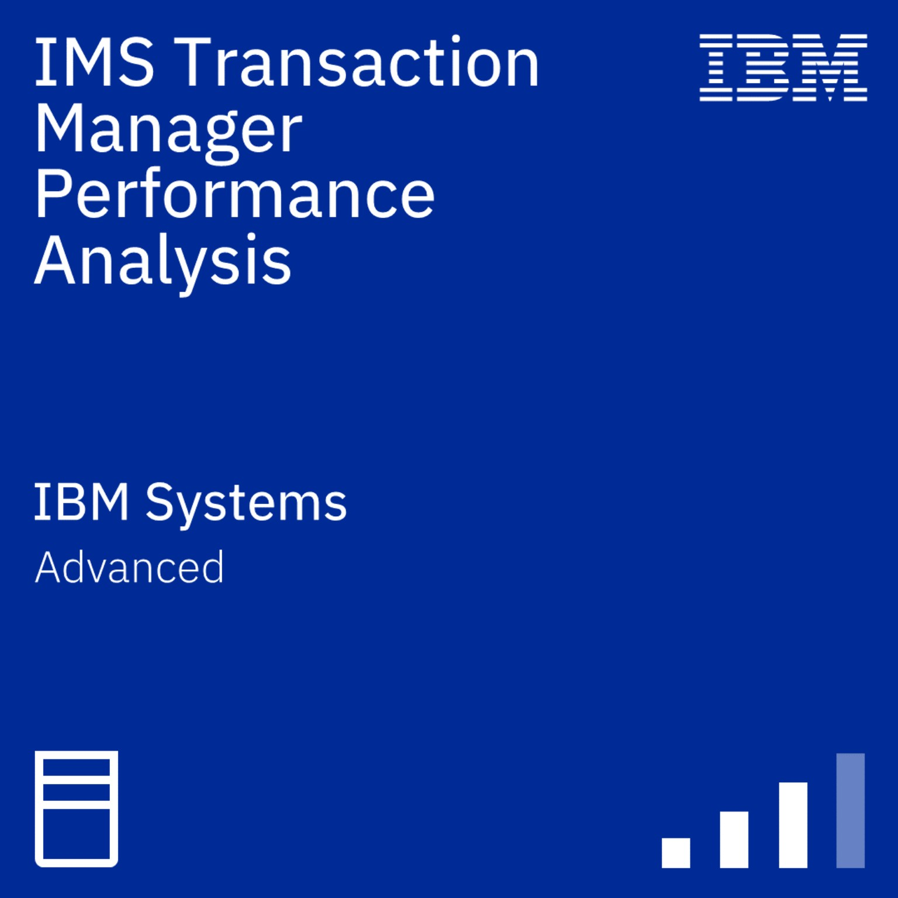
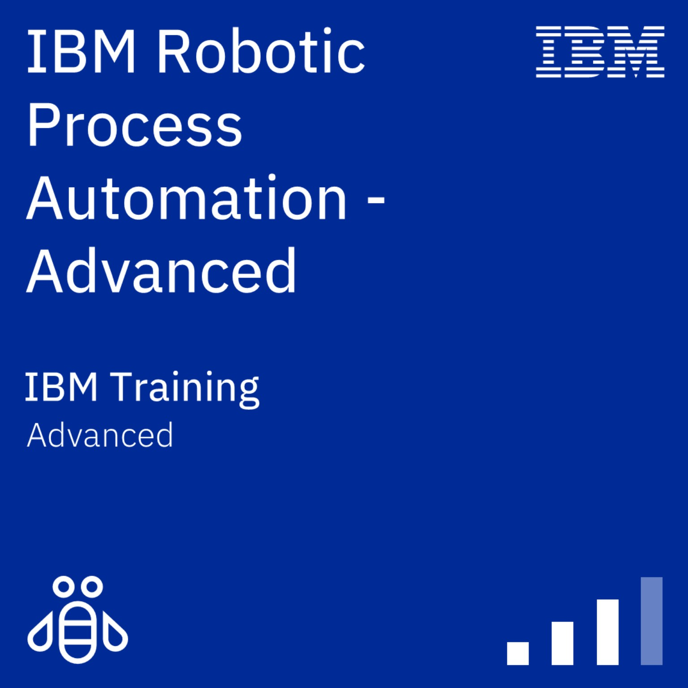
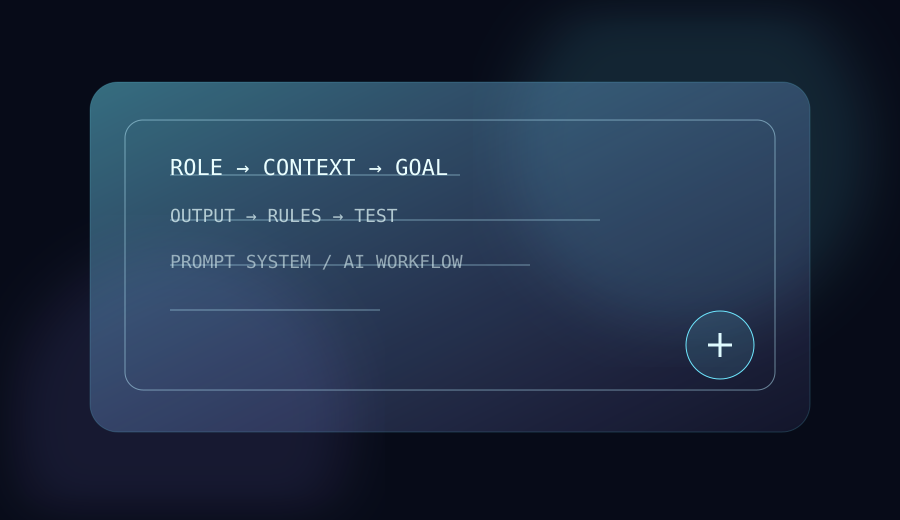
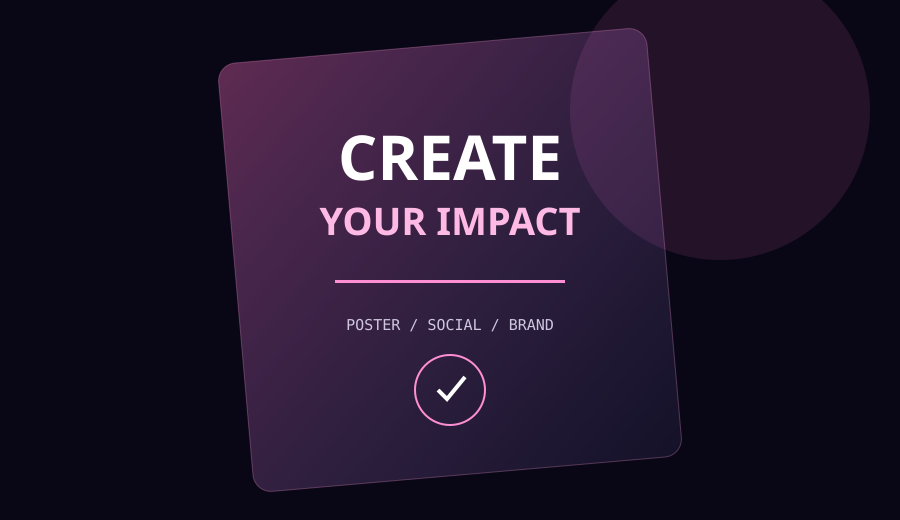
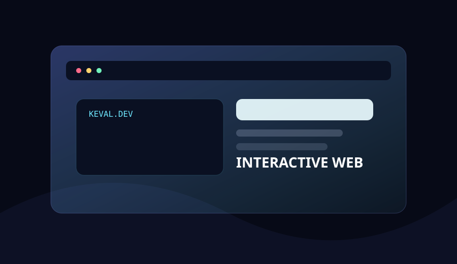
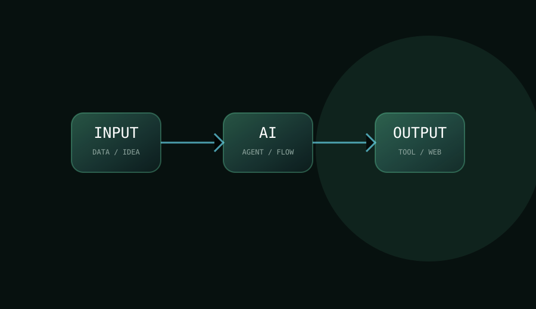

APR 2025 — PRESENT01
Personal Assistant
Intel · Gujarat, India
Professional experience listed in the supplied profile, with an ongoing role connected to the Intel ecosystem.
INTELIBM Community × Intel ecosystem · AI · Design · Web · ML
I'm Keval Patel — a Diploma IT developer and creative technologist working across AI prompts, graphics, modern web experiences and practical ML projects.
My focus is turning technical learning into useful, visual and presentable work. My profile combines Diploma IT studies with hands-on work around web development, machine learning, AI tools, design and emerging technology.
Learn the technology. Create something useful. Make the experience memorable.
Professional and learning experiences presented from the profile information supplied for this portfolio.
Intel · Gujarat, India
Professional experience listed in the supplied profile, with an ongoing role connected to the Intel ecosystem.
INTELTata Group · Ahmedabad
A short-term experience listed in the supplied profile focused on the cyber security analyst role.
CYBER SECURITYBharatCares® · Gujarat, India
AI engineering experience listed in the supplied profile, connected with BharatCares®.
ARTIFICIAL INTELLIGENCETata Group · India
Hands-on simulation areas listed in the profile include Exploratory Data Analysis, AI-powered Risk Profiling, Business Report Creation and AI-driven Collections Strategy.
GENAI · DATA ANALYTICSA mix of creative production, AI workflows and developer skills for websites, content, projects and digital products.
Designing structured prompts, role systems, workflows and reusable instructions for AI tools.
PROMPTS / WORKFLOWSCreating clean social creatives, posters, promotional visuals and modern brand layouts.
POSTERS / SOCIAL / BRANDBuilding responsive landing pages and interactive experiences with HTML, CSS and JavaScript.
HTML / CSS / JS / VERCELExploring agentic workflows and no-code/low-code tools to turn repetitive tasks into systems.
AGENTS / AUTOMATIONDeveloping practical ML project experiences with Python, Flask and scikit-learn.
PYTHON / FLASK / MLTurning ideas into prototypes, utility tools and polished product concepts for the web.
IDEATION / PROTOTYPINGUploaded badge artworks are presented as an independent interactive credential gallery.






Certification and learning items listed in the supplied profile.

Prompt systems for AI websites, agents, content workflows and product ideation.
Discuss a project ↗
Modern promotional posters for shops, startups, events and social media.
Request design ↗
High-impact landing pages with motion, responsive layouts and polished interactions.
Build a website ↗
Exploring useful AI assistants, automation flows and practical web utilities that turn ideas into repeatable systems.
Start a conversation ↗A practical ML-focused project for transaction risk scoring and fraud/genuine classification, presented as a deployable web experience.
Building a foundation across programming, web development, databases and modern computing.
Exploring IBM learning paths, systems, automation and emerging technologies through credentialed learning.
Building familiarity with Intel Trust Authority concepts through the uploaded Partner Technical Pro credential.
Turning projects, creative work and AI experiments into public digital experiences.
Available for website projects, poster/graphic design, AI prompt work and digital project collaborations. Based in Ahmedabad, Gujarat, India.